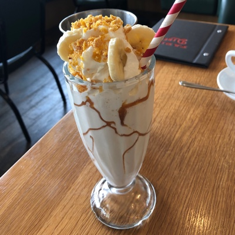
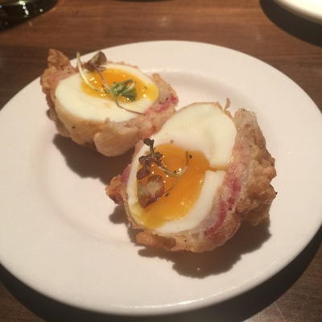
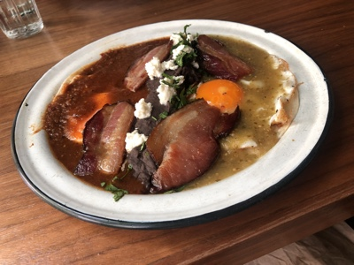
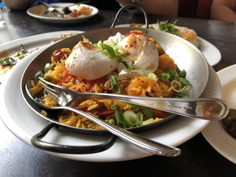
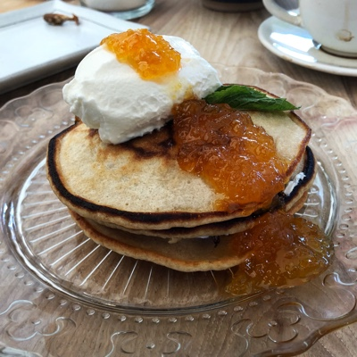

A Few Club Favourites
|  |
Pity the lactose intolerant, for milkshakes are the nectar of the gods. And of all the milkshakes in the city, the Banana Caramel milkshake at Fable Diner is the best. |
|  |
Tuc Craft Kitchen does a mean Fried Chicken & Waffles but they also have a long standing breaded, bacon wrapped, and deep fried egg, which they manage to to do like a soft boiled egg every time. It's a heart attack on a plate, but it's a delicious heart attack. |
|  |
La Mezcaleria in Gastown does a fantastic Mexican Breakfast, and the Huevos Divorciados are the most reliable thing on the menu. Eggs and beans dividing a red sauce from a green sauce, and every bite delicious. |
|  |
Spanish Tapas is just as good at breakfast as it is at dinner. Feast your eyes on the Breakfast Paella at Al Bodega on Main Street. The eggs, poached perfectly on top of rice with chicken, shrimp, and other assorted seafood. |
|  |
Aleph in the downtown east side offers an intriguing midle eastern menu, and their brunch menu offers maybe the best pancakes in the city. Served with Labneh and Honey drizzled on top, every bite is a symphony. |